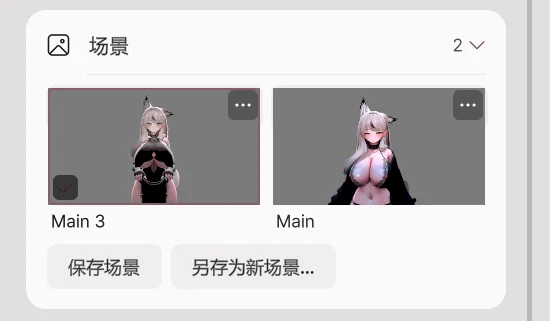
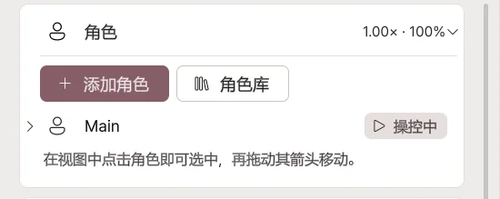
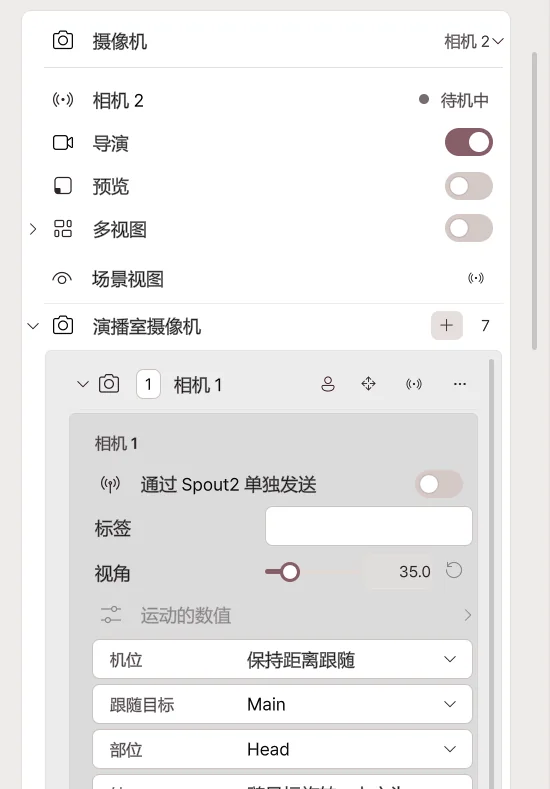
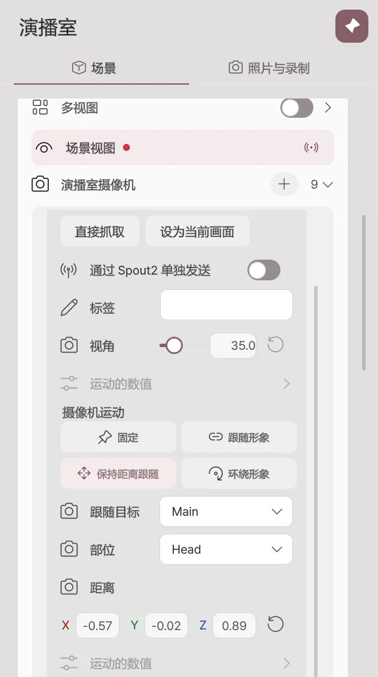
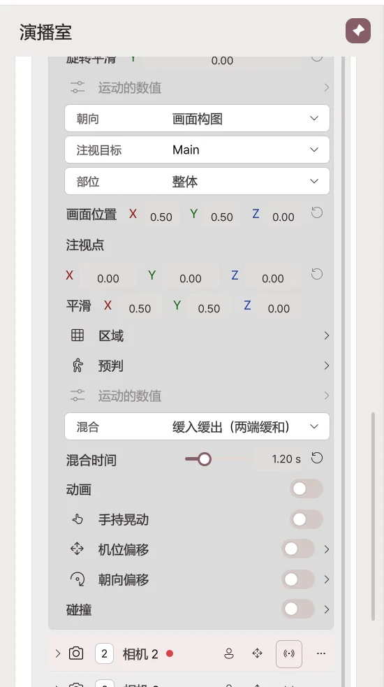
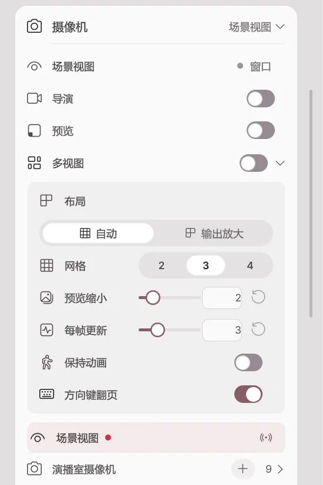
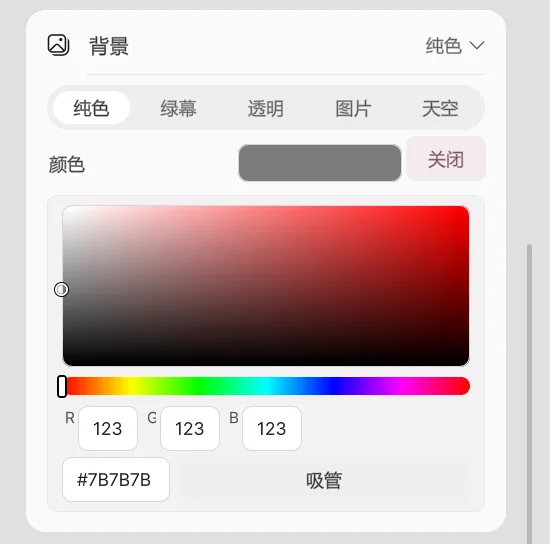
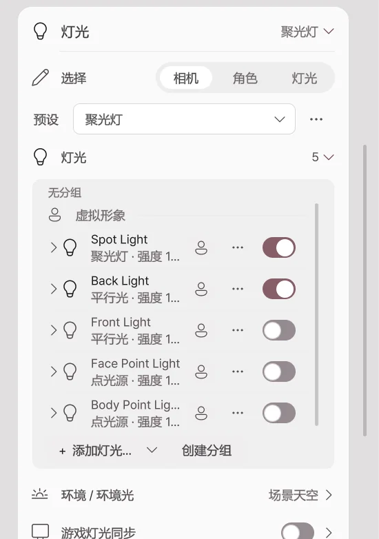
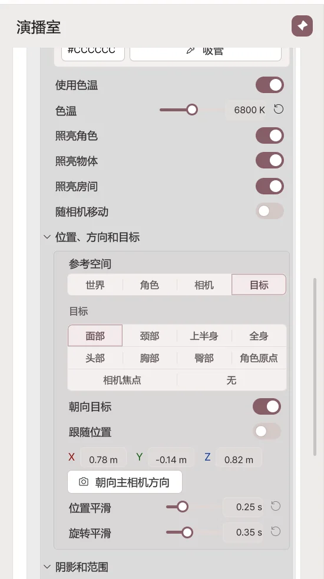
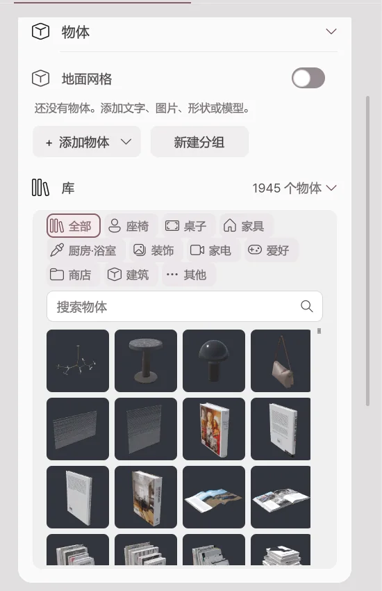

工作室
布置背景、灯光和道具，并保存要拍摄的相机和场景。屏幕的色彩和镜头效果将在相机效果中单独说明。
场景保存

- 将背景、灯光、角色、摄像头调整到所需状态。
- 在场景卡上保存。
- 下次选择缩略图时，将调用该场景的构图。
| 项目 | 做的事情 |
|---|---|
| 新场景 | 创建新的场景构成。 |
| 保存 | 记录当前布局和设置。 |
| 缩略图 | 调出已保存的场景。 |
| 搜索 | 按名称查找场景。 |
| ⋯ 菜单 | 打开该场景的重命名、复制等命令。 |
角色布置

| 调节 | 变化的东西 |
|---|---|
| 位置 X | 向左右移动。 |
| 位置 Y | 上下移动。 |
| 位置 Z | 前后移动。 |
| 旋转 | 改变角色所看的方向。 |
| 大小 | 将场景中的角色放大或缩小。 |
| 亮度 | 调节应用于角色的亮度。 |
| 居中 | 将角色恢复到基准位置。 |
多个角色 (Pro)
通过添加角色，可以在同一场景中放置更多角色。选择角色后更改控制对象，接收我追踪输入的角色也会随之改变。
- 相同动作：多个角色会根据相同的追踪输入一起移动。
- 全部唇形同步：多个角色的嘴巴会一起动。
- 主要唇形同步：只有主要控制的角色嘴巴会动。
- 关闭唇形同步：不使用共享唇形同步。
摄像机 (Pro)

- 摄像机 → 点击工作室摄像机的 + 来创建摄像机。
- 点击摄像机名称展开详细设置。
- 调整目标、位置、视线、镜头。
- 将该摄像机选择为播出对象。
要使用当前的工作构图，请使用摄像机的 ⋯ → 调整为当前视图。
位置方式

| 选项 | 摄像机移动方式 |
|---|---|
| 停留 | 停留在设定的位置。即使角色移动也不会跟随。 |
| 锁定目标 | 附着在所选骨骼或点上。如果选头部可能会进入头部内部。 |
| 保持距离跟随 | 与目标保持 X·Y·Z 的距离进行跟随。 |
| 绕目标旋转 | 在规定距离内绕目标移动。通过角度调整前侧或侧面构图。 |
- 目标：选择要跟随的虚拟角色及其头部、身体等基准点。
- 距离 X·Y·Z：确定摄像机离目标在左右、高度、前后方向上的距离。
- 平滑度：提高平滑度摄像机会慢慢跟随，抖动减少；降低则会立即响应。
旋转基准
| 选项 | 当虚拟角色转身时 |
|---|---|
| 世界坐标 | 摄像机的相对方向保持场景基准不变。 |
| 简单跟随 | 跟随目标的背后移动。 |
| 跟随目标旋转，顶部朝世界 | 跟随左右旋转，但保持屏幕顶部方向向上。 |
| 旋转，无滚动 | 跟随左右及上下旋转，但不跟随头部倾斜。 |
| 固定在目标上 | 摄像机位置会随角色全身旋转（包括头部倾斜）而旋转。 |
该设置是摄像机放置的基准。若想持续将面部显示在屏幕上，请选择下面的视线方式。
视线方式

| 选项 | 镜头所对方向 |
|---|---|
| 原地 | 持续观看指定方向。 |
| 与对象一起 | 与对象一同转向对象所看的方向。 |
| 注视对象 | 持续注视选定的脸或点。 |
| 第一人称 | 以开始的角度为基准，从人物视角观看。 |
| 画面构图 | 调整方向，使对象位于画面中指定的位置。 |
- 瞄准点: 将焦点移动到对象的X·Y·Z位置。
- 画面位置: 横向·纵向0.5为中央。改变数值可将角色放置到画面的其他位置。
- 视线平滑度: 提高时镜头方向缓慢变化，降低时立即跟随。
镜头与切换
| 项目 | 改变数值会发生 |
|---|---|
| 视野角 | 降低时像长焦一样放大，提高时像广角一样扩大。 |
| 正交大小 | 提高时画面更宽，角色变小。 |
| 前剪裁距离 | 不显示比此距离更近的物体。提高可能导致脸部或道具被裁切。 |
| 后剪裁距离 | 不显示比此距离更远的物体。 |
| 画面比例 | 改变画面形状，如横向直播、纵向视频等。 |
| 震动强度 | 提高时有手持拍摄的感觉。0表示不震动。 |
| 震动速度 | 提高时震动更快。 |
| 切换 | 立即切换到其他摄像机。 |
| 交叉渐变 | 两个相机画面在切换时间内交叠变化。 |
导演与多视角

- 监督模式：切换摄像头以构建广播画面。
- 多视图：可以在一个地方预览多个摄像头。通过单独的开关打开。
- 网格：增大后，可以一次看到更多的摄像头，每个格子会变小。
- 降采样：提高时，预览画质和电脑负担都会减少。
- 刷新率：降低会使预览不那么流畅，但减轻电脑负担。
- 自动切换：根据标签和权重选择下一个摄像机。权重为0的摄像机不会被自动选择。
- 按摄像头的 Spout2：将所选摄像头画面以单独名称发送到 OBS。最多可以额外输出 3 个。
背景

| 选择 | 显示的结果 |
|---|---|
| 单色 | 用均匀的颜色填充背景。 |
| 绿色·蓝色 | 在 OBS 中可以通过色键去除的背景。请选择与衣服不同的颜色。 |
| 透明 | 在 Spout2·NDI 中无背景合成。接收端也必须支持 Alpha 合成。 |
| 图片 | 使用 PNG·JPG 图片作为背景。 |
图像的放大·缩小是调整图片大小，左右·上下位置是更改图片放置的位置。开启填充时，会保持比例并裁剪边缘来填充。
拍摄画面的显示会开启像手机·摄像机一样的屏幕装饰。比例是屏幕形状，样式是装饰风格，摄影·录制是开始实际拍摄的按钮。
灯光

通过预设选择整体氛围，点击单独灯光进行细节调整。
| 项目 | 修改效果 |
|---|---|
| 强度 | 提高亮度。过高会使皮肤·头发变白失真。 |
| 颜色 | 改变照射在虚拟角色上的灯光颜色。 |
| 色温 | 低则偏橙色，高则偏蓝色。 |
| 范围 | 点光·聚光灯的光可以照到更远的地方。 |
| 光斑角度 | 收窄照射某一部分，放宽照射周围区域。 |
| 阴影强度 | 提高阴影会加深阴影。 |
| 阴影柔和度 | 提高会使阴影边界变模糊。 |
| 环境光 | 照亮灯光未直接照到的部分。 |
位置与目标

- 跟随位置：当虚拟角色或骨骼移动时，灯光也会跟随移动。
- 面向对象：将光源朝向目标。
- 平滑度：提高后，光源会减少对目标微小抖动的跟随。
- 灯光组：将多个灯光绑定在一起，同时改变位置、旋转和亮度。
- 体积聚光 (Pro)：在空气中形成光柱。提高密度，光柱会更浓。
房间与道具

选择房间预设来放置背景空间。通过位置、旋转和大小调整舞台和角色的位置。

- 添加物体：放置文本、图片、图形或3D道具。
- 世界固定：即使角色移动，物体也保持在原位。
- 绑定角色/骨骼：跟随身体或手、头移动。
- 偏移：稍微移动或旋转绑定点。用于调整手持物体的位置。
- 角色归属：即使移动到其他场景，也会跟随该角色。
- 工作室归属：保留在当前场景。
道具和角色的使用权限分别遵循原作者的条款。详细内容请参阅角色与道具。